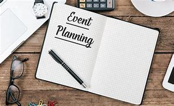

Organizations overview
Botanical building blocks
Botanical building blocks was founded in 2020 by a young woman that has a passion for environmental and the community activists that is based in Cape Town, South Africa. She started an organisation that also has a passion for the environment. The organisation aims to address both environmental sustainability and social upliftment by involving disadvantaged communities in the upcycling of waste materials into handcrafted artificial flowers used for decor, events, and educational purposes and so much more these buildable flowers you can also gift to a friend or a loved one.
mision_statement
To inspire creativity for any person that loves to build and create small uplifting things, it also helps to spread environmental awareness, It helps community development through the sustainable creation of buildable flowers from recyclable materials that bringshappiness to creative people and helps the environment .The mission that Botanical building blocks has is to take care of the environment and to create buildable flowers from waste materials found in the environment.
visoin_statment
A greener more natural and a more inclusive future where creativity blooms through every person, creativity also blooms from sustainability and community empowerment thorough every person. This organization is also in business to help and take care of the environment. And to create something beautiful from waste materials and from that waste materials buildable flowers will bloom.
target_auidience
- Environmental entusiasts
- Event planners looking for eco friendly decor
- Donors and sponsers
- Schools and NGOs
- Volunteers and craft hobbyists
